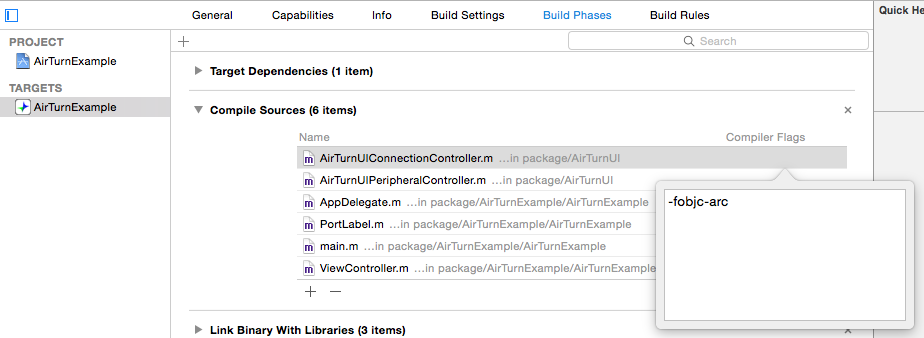

Existing developers: Please see the Upgrade Notes and CHANGELOG
Introduction
This is the AirTurn iOS framework which a developer can use to add AirTurn support to an iOS App with ease.
The framework supports both the Bluetooth 2 AirTurn BT-105 and the new Bluetooth 4 low energy AirTurn PED. Supporting each of these parts puts different requirements on the host application. Both parts of the framework are optional; existing developers are encouraged to add support for the AirTurn PED, new developers are encouraged to support the PED as a first priority and BT-105 as a second.
Bluetooth 2 devices (BT-105)
These devices are effectively Bluetooth keyboards. On connection to an iOS device, iOS will hide the virtual keyboard, and Apple does not provide direct access to key events through their public frameworks so several workarounds are used to support these devices. Most of the time this works ok, but as it is a workaround it is always susceptible to changes in UIKit and there are some things which are difficult to work around. See the HID Support notes for more information.
Bluetooth 4 devices (PED)
These devices can operate in HID mode like the BT-105, but in iOS mode use a proprietary Bluetooth Low Energy service which allows the framework to connect directly to the device and therefore not requiring any workarounds or keyboard management. The only requirement on the host Application is to provide a way to access the AirTurn settings (a self-contained UI provided in the example). The host device must have Bluetooth low energy hardware present. If it doesn’t, a message is displayed indicating that.
Classes
AirTurnManager — Provides integrated status of both parts of the framework
HID (BT-105)
AirTurnViewManager — Manages the hidden view
AirTurnView — Detects HID AirTurn pedal events
AirTurnKeyboardManager — Manages the display of the virtual keyboard
AirTurnKeyboardStateMonitor — Observes the state of the virtual keyboard and determines if an external keyboard (BT-105) is connected
BTLE (PED)
AirTurnCentral — Discovers BTLE AirTurn devices
AirTurnPeripheral — Represents a BTLE AirTurn device
Notifications
A list of all notifications is available here.
Requirements
- Framework: iOS 6+
- AirTurnUI: iOS 6+
- Example Project: Xcode 8, iOS 8
Documentation
Installation
Documentation
The documentation can be installed directly into Xcode by running the docsInstallToXcode.sh script.
Framework
If you have previously used a 1.x version of the AirTurnInterface framework, please see the Upgrade Notes.
There are two versions of the framework – static and dynamic. Static is the ‘compatibility’ build. Dynamic is only supported on iOS 8+ but is the preferred method.
- Drag the appropriate
AirTurnInterface.frameworkpackage into your project (check ‘Copy Items’ and make sure your App target is checked) - Drag the
AirTurnUIfolder into your project (check ‘Copy Items’ and make sure your App target is checked) - Add the CoreBluetooth framework to your link list
- Select your project in the project navigator
- Select the App target
- Select the “Build Phases” tab
- Expand “Link Binary With Libraries”
- Click the plus icon
- Add
CoreBluetooth.framework
- If using the dynamic framework
- Click the plus at the top of “Build Phases” and click “New Copy Files Phase”
- In the new copy files phase at the bottom, change ‘Destination’ to ‘Frameworks’, then click the plus and select AirTurnInterface.framework
- Click the plus at the top of “Build Phases” and click “New Run Script Phase”
- Paste:
script=“${BUILT_PRODUCTS_DIR}/${FRAMEWORKS_FOLDER_PATH}/AirTurnInterface.framework/strip-frameworks.sh” if [ -f “$script” ]; then bash “$script” fi
Basic usage
The easiest way to implement AirTurnInterface is to simply provide a way of accessing the AirTurnUIController interface from within your App. This class manages the interface and connection to devices with some sensible defaults for all configuration. These classes are intended to be used as-is. If you need to modify them to adapt them to your App, please let us know and we’ll see if there is a way we can make that a standard option in future releases.
- Provide access to
AirTurnUIConnectionControllerin a navigation controller in your UI, probably in a ‘settings’ section of your App. Listen for the
AirTurnPedalPressNotification:Objective-C
#import "AirTurnUIConnectionController.h" ... - (void)setup { [[NSNotificationCenter defaultCenter] addObserver:self selector:@selector(AirTurnEvent:) name:AirTurnPedalPressNotification object:nil]; } - (void)AirTurnEvent:(NSNotification *)notification { AirTurnPort pedal = [notification.userInfo[AirTurnPortNumberKey] intValue]; NSLog(@"Port: %d", (int)pedal); }Swift
import AirTurnInterface ... func setup() { NSNotificationCenter.defaultCenter().addObserverForName(AirTurnPedalPressNotification, object: nil, queue: nil) { (notification) -> Void in if let dict = notification.userInfo as? [String:AnyObject], portNum = dict[AirTurnPortNumberKey] as? NSNumber, port = AirTurnPort(rawValue: portNum.integerValue) { print("Port \(port.rawValue)") } } }
Generally, port 1 (left pedal) is ‘up’ or ‘back’ and port 3 (right pedal) is ‘down’ or ‘next’.
If you intend to support BT-105, you should also read HID support in AirTurn Interface
Logging
The framework logs using CocoaLumberjack if available, otherwise it uses NSLog. You can set the log level of the framework independently to your other code. Most logging is Debug level.
Using in a non-ARC project
The AirTurn UI source code is written for ARC. If your project does not use ARC (i.e. you still use retain/release), you will need to enable ARC specifically for the AirTurn UI source files. Click your project in the navigator, then the App target, then the ‘Build Phases’ tab. Expand ‘Compile Sources’, find the AirTurn files, and in the ‘Compiler Flags’ column, add -fobjc-arc.

Background operation
When connected to an AirTurn PED, the AirTurn framework can provide notifications to your App when in the background, even if your App has been killed (quit, either automatically by the system or manually by the user).
To support background operation in your own App, in the project ‘Capabilities’ tab under ‘Background Modes’ tick ‘Uses Bluetooth LE devices’.
To test background operation in the example App, first connect to an AirTurn PED, then kill the App using the button provided (to demonstrate the situation when the App is killed by the system when in the background), then press a pedal on the AirTurn. You will notice music in the iPod starts playing; this has been triggered by the example App.
Supporting Multiple PEDs
You may want to offer the ability for a user to connect several PEDs to your App to control different functionality. This is supported since 2.1.0 of the AirTurn Framework.
As long as you are using AirTurnUI, to add support for multiple PEDs simply set the maxNumberOfBTLEAirTurns property to more than 1 (or to 0 for unlimited PEDs) on the AirTurnUIConnectionController. This property is IBDesignable, so you can set it in your storyboard.
To identify which AirTurn your application is receiving notifications for, identify the device using the AirTurnIDKey value, which is a string unique to the device. This identifier will remain the same across App reloads and device reconnections, however you should listen to AirTurnRemovedNotification and AirTurnInvalidatedNotification which indicate that a device ID is no longer valid and associated data stored by your Application should be removed.
Troubleshooting
“I get the error Undefined symbols for architecture armv7: "_OBJC_CLASS_$_UITextInputAssistantItem", referenced from: objc-class-ref in AirTurnInterface(AirTurnView.o)”
Upgrade to the latest Xcode or add -undefined dynamic_lookup to ‘Other linker flags’ in Build Settings
“I get errors like Undefined symbols for architecture armv7: "_AirTurnButtonPressedKey", referenced from: [ViewController AirTurnEvent:] in ViewController.o”
Make sure the framework is in the list of linked libraries. It may not be, even if it is present in your project. Select your project in the project navigator and select the appropriate target. In the ‘Build phases’ tab, check AirTurnInterface.framework is listed. If not, drag it from your project navigator into the list.
If this fails, remove it from the list and project and add it again.
“The virtual keyboard doesn’t display when a BT-105 is connected”
You can press the power button on a BT-105 to toggle the keyboard. For automatic keyboard management, See the HID Support notes.
“Sometimes a view with information about the framework pops up when tapping the screen”
See Info View
AirTurn PED
See PED FAQ.
Changelog
See CHANGELOG.
Upgrade notes
2.2 to 2.3
This release contains bitcode, so is only compatible with Xcode 7.
To upgrade to the dynamic framework (optional, iOS 8+ only):
- Remove the existing AirTurnInterface.framework from your project.
- Drag in the new dynamic AirTurnInterface.framework, (check ‘Copy Items’ and make sure your App target is checked)
- In your project’s ‘Build Phases’
- Click the plus at the top of “Build Phases” and click “New Copy Files Phase”
- In the new copy files phase at the bottom, change ‘Destination’ to ‘Frameworks’, then click the plus and select AirTurnInterface.framework
- Click the plus at the top of “Build Phases” and click “New Run Script Phase”
- Paste:
script=“${BUILT_PRODUCTS_DIR}/${FRAMEWORKS_FOLDER_PATH}/AirTurnInterface.framework/strip-frameworks.sh” if [ -f “$script” ]; then bash “$script” fi
2.1 to 2.2
If using automatic keyboard management, a dismiss bar is now automatically added to the keyboard. To prevent this, use +setActive: on AirTurnKeyboardDismissBarManager.
If compiling with Xcode 6, you’ll need to add -undefined dynamic_lookup to ‘Other linker flags’ in Build Settings to prevent warnings about the missing _OBJC_CLASS_$_UITextInputAssistantItem. When you switch to Xcode 7, remove this linker flag.
2.0 to 2.1
The main changes are multi-ped support and automatic keyboard management, which are both disabled by default. To learn how to use them, follow the links.
1.x to 2.0
The easiest way to support existing and future AirTurn devices with the 2.0 framework is to remove all existing AirTurn related code and use AirTurnUI as described in Framework.
As Apple decided the built-in virtual keyboard management broke the rules, that functionality has been removed from the framework which means all previous UI workarounds (such as NBPopover) are no longer required. This also means that when an AirTurn BT-105 is connected and a normal text field needs to be used the user has to press the power button on the AirTurn to display the virtual keyboard.
To support the new AirTurn PED device the framework depends on one additional iOS framework, CoreBluetooth.framework. This can be added in the “Link Binary with Libraries” section of the target “Build Phases” tab.
Other than the removal of the virtual keyboard management, the HID part of the framework is mostly unchanged from 1.5.x, however the AirTurnInterface class has been renamed to AirTurnViewManager to more approriately describe its role alongside the new Bluetooth low energy part of the framework.
Some notifications have been replaced and deprecated, replacements are specified in the documentation and headers.
HID support in AirTurn Interface
See HID Support notes.
AirTurn Interface Info view
The interface adds a gesture recognizer to the key window to detect 6 taps with two fingers. This action will show an info view, which is temporarily added to the key window and dismissed with a single tap outside the box. This view displays the interface version and has indicators for all the AirTurn ports for diagnostic purposes. To disable this, see the AirTurnInfoViewController class documentation.